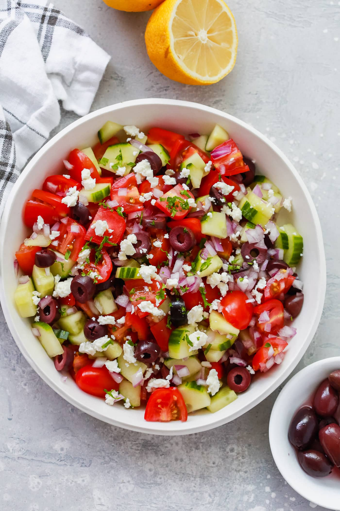

Mediterranean Salad

Description
A tasty,fresh mediterranean salad full of tomatoes, cucumbers, onions, olives, and feta cheese all topped with a bright vinegarette.
You can adjust the amount of any ingredient to your liking. The perfect summer recipe you cannot go wrong with.
Ingredients
- 2 cups cherry tomatoes diced
- 1 yellow bell pepper diced
- 1 cup red onions sliced
- 1/2 cup black olives or kalamata olives sliced
- 1 medium cucumber diced
- 3 tbsp feta cheese crumbled
- 3 tbsp sun-dried tomatoes julienne cut
- 3 tbsp extra virgin olive oil
- 1 tsp garlic minced
- 1 tbsp lemon juice
- Salt and freshly ground black pepper
- 1 tbsp fresh parsley chopped
Steps
- In a large bowl, toss together the cherry tomatoes, yellow bell pepper, red onions, black olives, cucumber, feta cheese, and sun-dried tomatoes.
- In a small bowl, whisk the olive oil, garlic, lemon juice, salt, and pepper.
- Pour the dressing over the salad mixture, and toss. Top with fresh parsley
Return to top